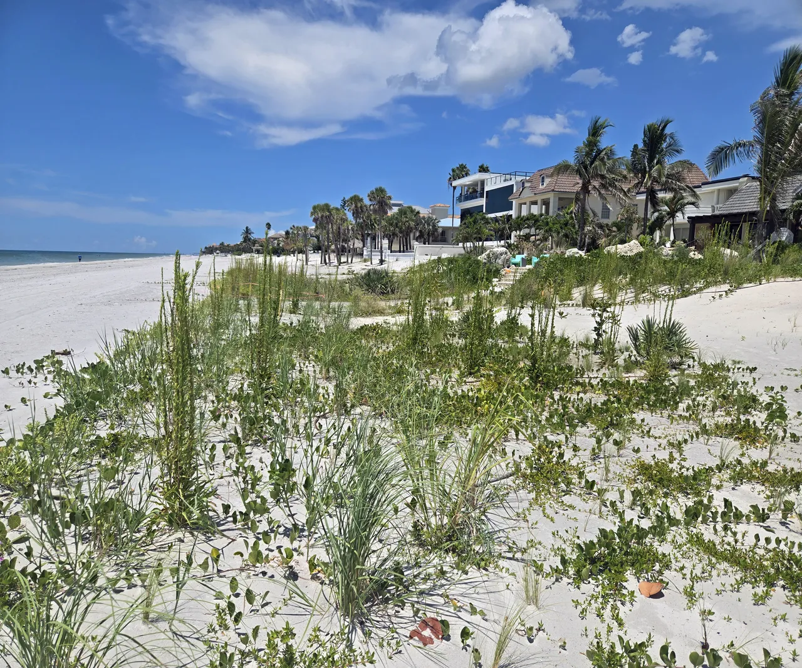

HOA Communities
Florida's unique climate and ecosystems make it one of the most biodiverse states in the nation. HOA communities across Florida are discovering that transitioning to native landscaping is not just an environmental decision, but a smart financial and aesthetic one.
Prepared by Living Spaces Gardening
The Benefits
Transitioning your community's landscape to Florida-native plants delivers measurable environmental, financial, and community-health benefits. Each question below answers one of the most common things HOA boards ask us.
Yes, and significantly so. Florida-native plants are adapted to local rainfall patterns and soil conditions, so once established they handle Florida's seasonal rainfall on their own. The irrigation system stops doing the heavy lifting it was designed to do with conventional turf.
Most established native plantings require little to no supplemental irrigation beyond natural rainfall. That typically takes one to two growing seasons.
Dramatically, yes. Native plants have co-evolved with Florida's soils and pest populations over thousands of years. They don't need the chemical inputs that keep non-native turf and ornamentals alive here.
There's also a legal angle worth knowing. Florida Statute 373.185 prevents HOAs from prohibiting Florida-Friendly and native landscaping practices. Your board has legal backing to make this transition, and homeowners requesting native landscaping cannot be denied under this statute.
They will, and in our experience it consistently becomes one of the most talked-about benefits. Butterflies, native bees, and birds are a visible, daily reminder that the transition is working. Residents who initially had concerns about native landscaping often become its most vocal supporters once the wildlife shows up.
Conventional turf functions as a biological desert. It produces nothing for the food web. Native plant communities do the opposite: they feed caterpillars, which feed birds, which draw in the pollinators your HOA's flowering plants depend on.
Yes, and it's one of the most compelling arguments for the transition in Florida specifically. Florida's flat topography and sandy soils make stormwater management a constant challenge. Deep-rooted native plants are one of the most effective natural tools available.
Turf grass roots reach 2 to 6 inches into the soil. Many native Florida plants develop root systems reaching 6 to 15 feet deep. Those deep roots create natural channels for water to infiltrate the soil rather than sheet across it.
Weekly mowing, edging, and blowing drops substantially once native groundcovers and perennials establish. Instead of weekly equipment runs, most mature native landscapes require seasonal trimming visits, typically twice a year.
This translates directly to lower maintenance labor costs for HOAs over time, along with reduced noise complaints from residents and reduced fuel expenditure across the community.
Every project starts with a thorough site assessment and a clear understanding of your community's aesthetic standards. Native landscaping does not mean wild or unkempt. Florida's native plant palette is remarkably diverse, and we design to the look your community wants.
We evaluate existing soil conditions, drainage patterns, sun and shade exposure, tree canopy, and the current plant community. We identify invasive species and note opportunities to improve stormwater infiltration and habitat value.
We work with your board and ARC to understand your aesthetic vision and deliver complete design documentation: plant lists with botanical and common names, a phased implementation plan, and everything needed for board approval.
All plant material is sourced from reputable, family-owned Florida native nurseries. We manage seed bank prep, sod removal or solarization, correct planting depth and spacing, and mulch application. We walk your staff through the newly installed landscape before we leave.
During the establishment phase (typically 6 to 18 months), we recommend bi-weekly visits to monitor plant health, address irrigation, and stay ahead of weed pressure. Most long-term clients find that after 2 to 3 years, overall maintenance costs are significantly lower than their previous conventional landscape.
Start here
We welcome the opportunity to learn your goals and present a customized transition plan. Reach Kiamesha directly.
Text us about your communityReferences: Florida Department of Environmental Protection • University of Florida IFAS Extension • U.S. Environmental Protection Agency • National Wildlife Federation • Dr. Doug Tallamy, Bringing Nature Home • Florida Fish and Wildlife Conservation Commission • USDA Natural Resources Conservation Service • California Air Resources Board • Florida Statute 373.185